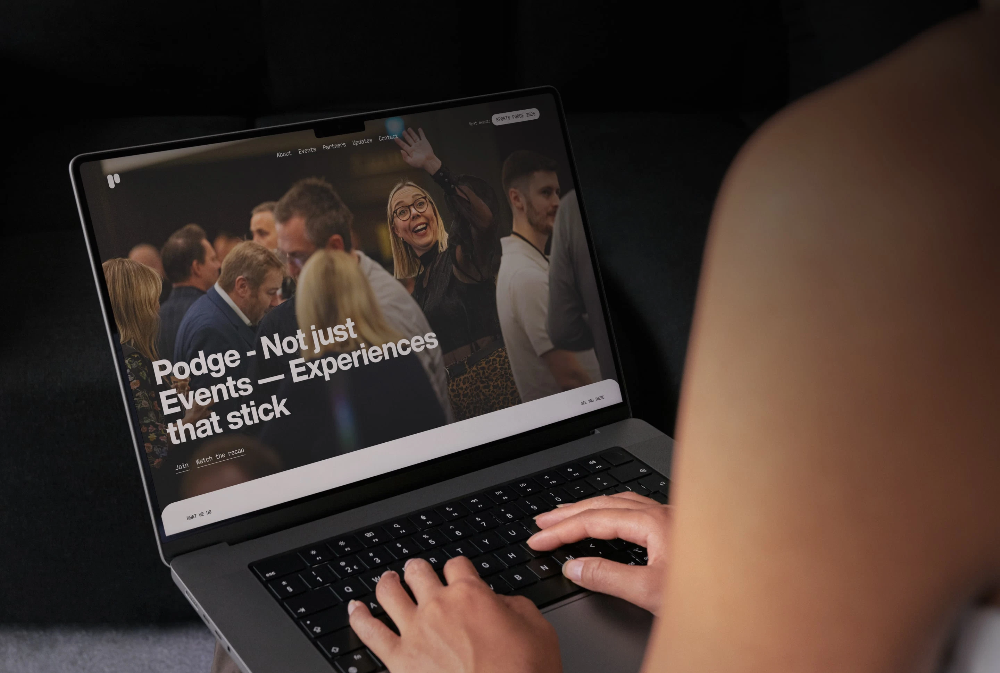
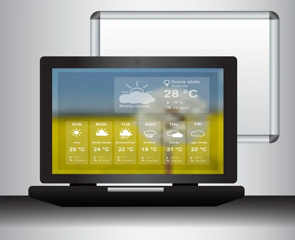
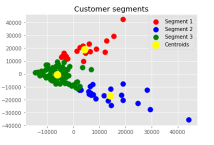
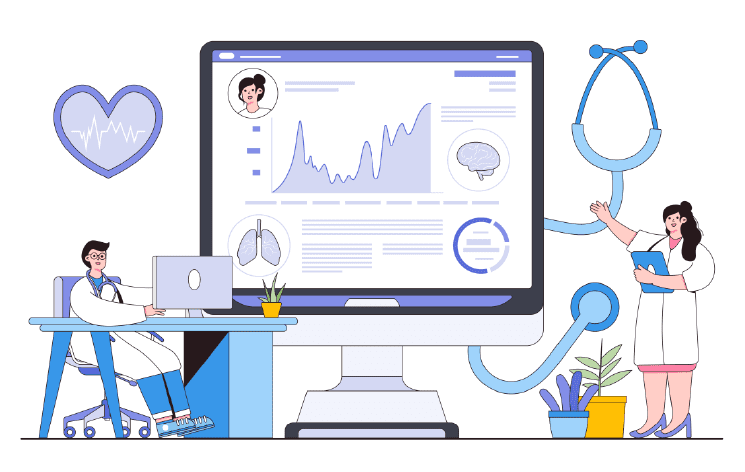
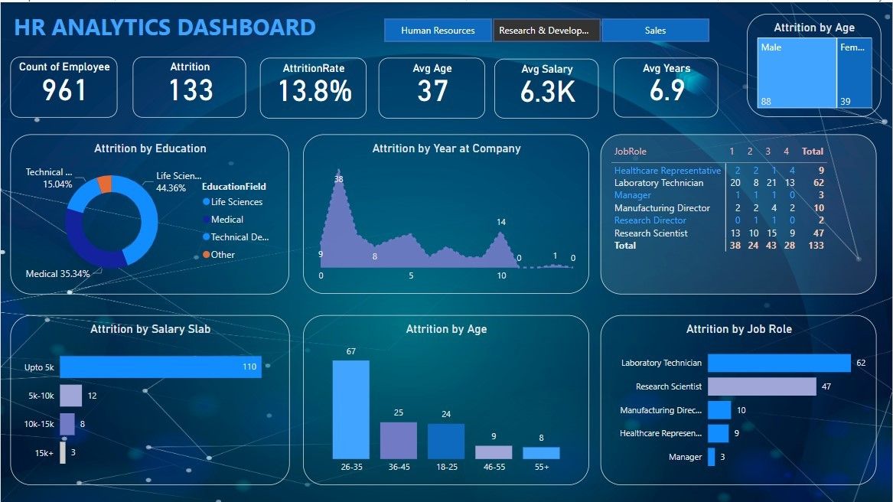
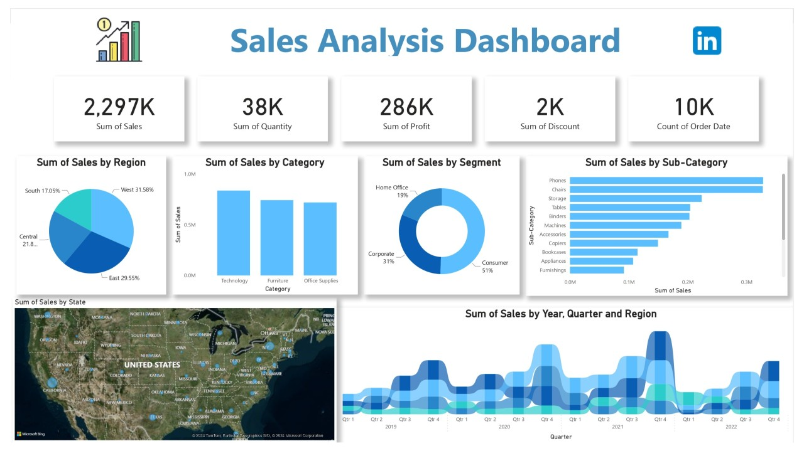
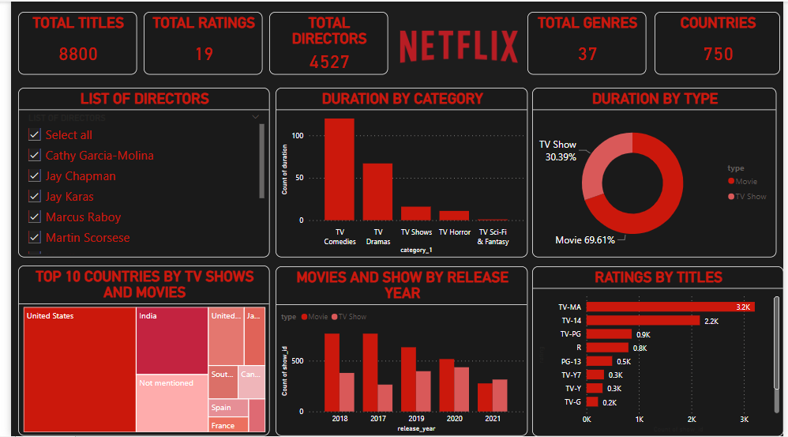

Latest Projects
Explore my web development, data analytics, machine learning, and business intelligence projects, showcasing practical solutions built using modern technologies.

Funky Feast Event Management
Designed and developed a fully responsive event management website with modern UI, smooth navigation, and mobile-friendly layouts.
Read More →
Netflix Clone
Developed a responsive Netflix landing page clone replicating the original interface using HTML, CSS, and JavaScript.
Read More →
Weather Forecast Application
Built a real-time weather forecasting application using a weather API to display live weather information and forecasts.
Read More →Photography Landing Page
Created a responsive photography portfolio website featuring modern layouts, gallery sections, and engaging user interactions.
Read More →
Customer Segmentation
Applied K-Means clustering in Python to segment customers based on purchasing behavior for business insights.
Read More →
Death Age Difference Analysis
Performed exploratory data analysis using Python to analyze mortality data and visualize age-related statistical patterns.
Read More →
HR Analytics Dashboard
Designed an interactive HR dashboard in Power BI with employee attrition, workforce insights, KPIs, and DAX measures.
Read More →
Sales Dashboard
Built an interactive sales dashboard in Power BI to monitor revenue, product performance, regional trends, and key business metrics.
Read More →
Netflix Analytics Dashboard
Developed a Power BI dashboard visualizing Netflix content by genre, ratings, release year, country, and content type.
Read More →